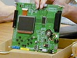

| 編集長：開発にはどれくらいかかったのですか？ |
| 津川 約２年ですね。 |
| 編集長：開発の手順を教えてください。 |
| 津川 一番最初はＣＰＵを決めます。ＣＰＵを決めるには画像のサイズ、つまり解像度を決めないといけませんので、同時に解像度も決定します。アドバンスの解像度は横240ドット、縦160ドットですね。カラーゲームボーイが160×144なので、かなり大きくなりました。画面を表示する液晶のサイズというのは解像度によって決まりますので、ここで液晶の大きさも決定しました。 |
| 編集長：やはりこれくらいの画面サイズは欲しいということで決まったんですか？ |
| 津川 液晶には経済サイズというのがあるんです。大きな板状の液晶を必要なサイズに切りとっていくので、余らせないようにしないといけないんです。そうしないと単価があがってしまうんです。いくつかパターンがあって、その中でゲームに一番ふさわしい大きさのものに決めました。 |
| 編集長：液晶が決まって、ＣＰＵが決まったあとというのは？ |
梅津 まず、ＣＰＵの仕様を決めるのに時間がかかるんです。途中段階でこういうサンプル基板を作るんですね。
そして、スタッフやソフト開発者に評価してもらうんですよ。実際に基板をさわってもらって、「こんな機能が欲しい」とか、「こんな機能はいらない」という意見をもらい、どんどん仕様を変えていくんです。 |
| 編集長：ＣＰＵを検討している期間というのはどれくらいだったんですか？ |
| 梅津 １年以上ですね。 |
| 編集長：開発期間の半分くらいはＣＰＵの検討？ |
| 梅津 「こういう機能を入れてほしい」と言われたとき、あらかじめＣＰＵの中にその機能を入れておかなくてはならないことがほとんどなんです。そうすると、ＣＰＵの設計から変えなくてはいけませんよね。ですから、今日仕様を変えて明日あがってくるというものではないんです。やはり仕様を変えて新しいＣＰＵを作るまでに何ヶ月もかかかるんですね。ＣＰＵが大きく変わったのは１回ですけど、細かい部分を２回、３回とマイナーチェンジしていってそのたびに評価してきました。この３人（津川さん、梅津さん、中島さん）というのは最初から最後まで、ずーっと変更、変更でＣＰＵや回路の検討を行ってきたんです。 |
| 編集長：評価してもらう間に、無理な注文はありましたか？ |
| 中島 ＣＰＵ内蔵プログラムに関しましては開発が進むにつれていろいろな要望が出て来まして、徐々に機能を追加して行きましたので、最終的に内蔵ＲＯＭへ収めるのに苦労しましたね。 |
※ＣＰＵ……コンピュータの中枢部分。基本処理装置、制御装置など主要部分をまとめた装置のことを呼ぶ。 |
 |